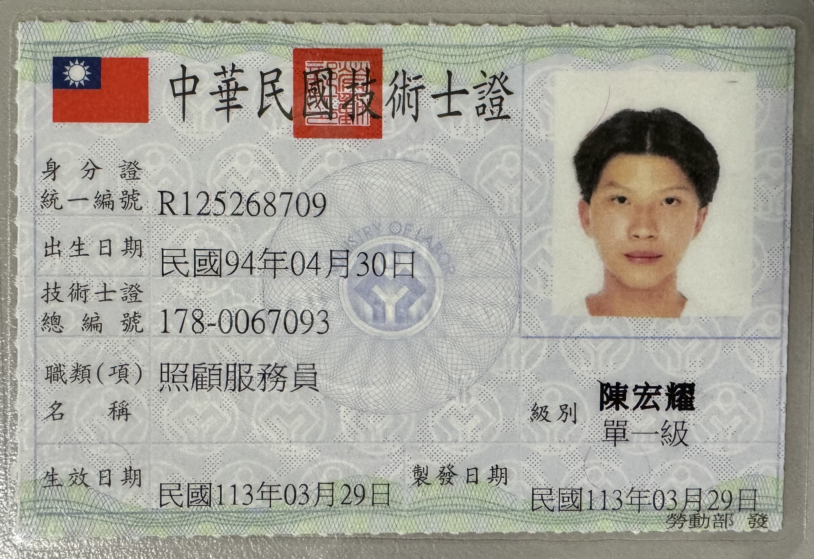
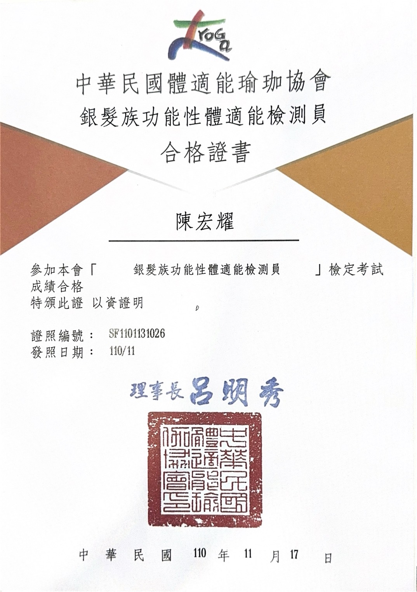
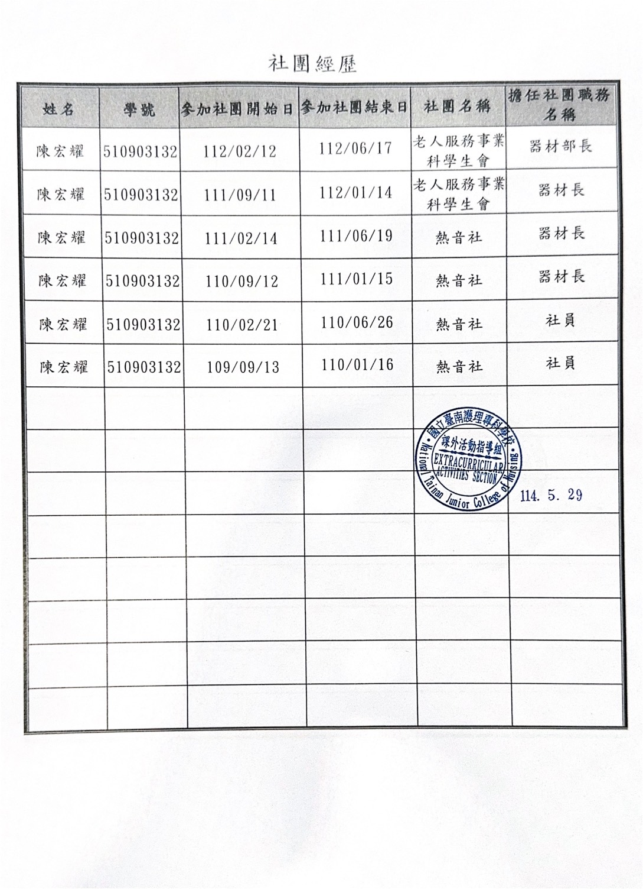
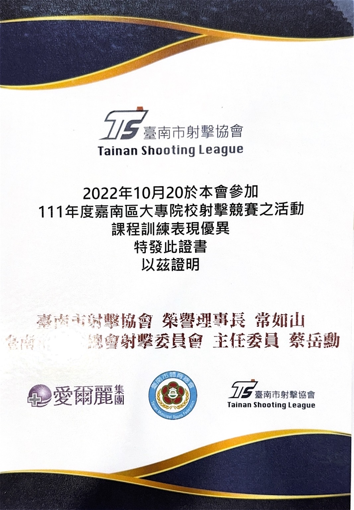

個人簡介
陳宏耀
跨足「高齡照顧服務」與「醫護教育數位學習」的專業人才。具備第一線照護實務經驗、急救救護技術（EMT-1、BLS）及銀髮族功能性體適能檢測資格。致力於結合醫療護理、高齡服務與數位教育科技，打造更全面且智慧的照護環境。
高齡服務
照顧服務員
初級救護技術員 (EMT-1)
數位學習
體適能檢測
🎓 學歷背景
- 國立臺北護理健康大學 醫護教育暨數位學習系（就讀中）
- 國立臺南護理專科學校 老人服務事業科（畢業）
🏥 實習與工作經歷
- 晉生護理之家 實習生
- 高雄榮民總醫院臺南分院 實習生
- 臺南微光社會福利協會 實習生
📜 專業證照與認證照片

照顧服務員 (單一級)
中華民國技術士證 (勞動部)

銀髮族功能性體適能檢測員
中華民國體適能瑜珈協會
🏆 社團經歷與榮譽證明

社團經歷證明書
臺南護專課外活動指導組

射擊競賽表現優異證書
臺南市射擊協會 (2022)
- 老人服務事業科學生會 器材部長 (112/02 - 112/06) / 器材長 (111/09 - 112/01)
- 熱音社 器材長 (110/09 - 111/06) / 社員 (109/09 - 110/06)
- 2022年嘉南區大專院校射擊競賽 課程訓練表現優異認證（臺南市射擊協會）